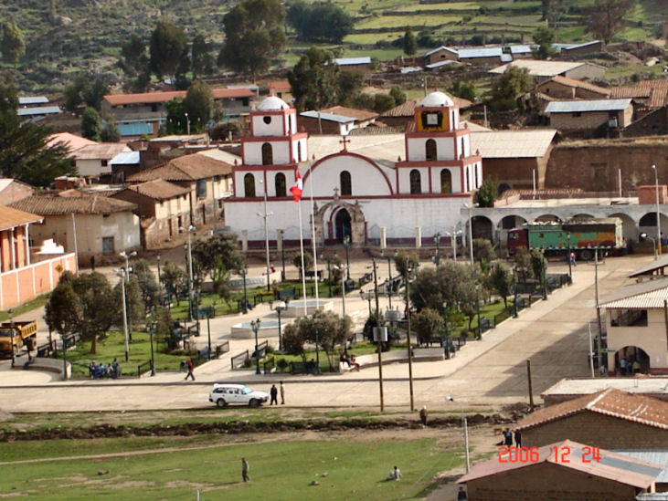
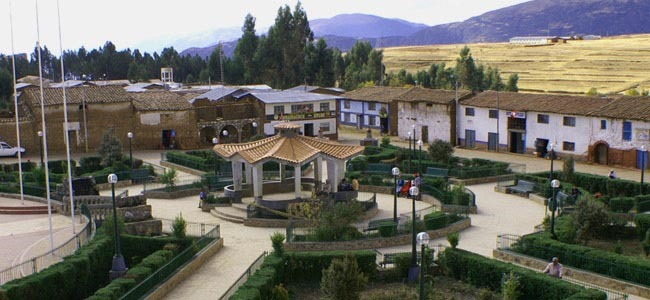
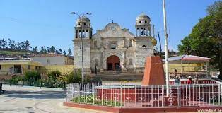

Victor Fajardo
Fajardo es una provincia que, como muchas de las de Ayacucho, se presta para diferentes tipos de turismo, tal es el caso del turismo ecológico gracias la belleza natural que posee; así como el turismo arqueológico, legado de las culturas que pasaron por el territorio; cultural, por la población andina que todavía sigue teniendo viva costumbres de sus antepasados; e histórico y festivo.

Entre aquellos atractivos podemos mencionar a:
El Centro arqueológico de Victor Fajardo:

Te invitamos a ver el siguiente video para ver mas lugares turisticos:
HUANCASANCOS
Sancos es una ciudad peruana capital del distrito de Sancos y de la provincia de Huancasancos, ubicada en el departamento de Ayacucho. 
Pachapupum de Huancasancos:

Te invitamos a ver el siguiente video sobre algunos lugares turisticos de este lugar:
SUCRE
La historia poblacional de Sucre se une a la historia poblacional del departamento cuya ocupación inicial se remonta hace más de 20,000 años con el hombre de Pikimachay. Posteriormente se registra en la zona la presencia Wari entre los siglos VI y XI de nuestra era, para luego dar paso al asentamiento Chanka y después al incaico.
Aguas termales de Qoridi de Sucre:
>
Te invito a observar el siguiente video
LUCANAS
Puquio es la capital de la provincia de Lucanas al sur del departamento de Ayacucho, se encuentra a 3.214 metros sobre el nivel del mar ofreciendo gran variedad de paisajes y agradables climas que propician la formación de picos con nieve eterna, mesetas, lagunas y cascadas.

Baño termales cceronta de Lucanas:

Te invito a observar el siguiente video para conocer mas lugares turisticos de esa region
PARINACOCHAS
La bella ciudad de Coracora es la capital de la provincia de Parinacochas, que se ubica en el departamento de Ayacucho. Esta ciudad de la sierra peruana, es famosa por su producción de quesos, así como también por el fervor religioso de su gente. Entre los atractivos turísticos de esta ciudad serrana, se encuentran sitios como el lago de Parinacochas, que se caracteriza por su gran extensión. Aquel lago es famoso por su alta presencia de parihuanas, aves que habitan en la región en compañía de otras como la choca, la huallata, y demás.
Laguna de Parinacochas en Coracora

Te invito a ver el siguiente video para ver mas lugares turisticos de esta region
PAUCAR DEL SARA SARA
La provincia de Páucar del Sara Sara se encuentra localizada en el departamento de Ayacucho, esta es la provincia más alejada de este departamento. Páucar del Sara Sara tiene una extensión de 2,096.92 Km2. Esta provincia tiene como capital a la ciudad de Pauza. Esta fue creada como provincia el 5 de enero de 1985. Páucar del Sara Sara estuvo poblada en la época prehispánica por los pueblos de los Soras, Rukanas y los Andamarcas. Posteriormente, se sabe que existió presencia inca en el territorio, por la presencia de diferentes legados arqueológicos de estos.

Aguas Turquesas del Sara Sara:

Volcan del Sara Sara:

Nevado del Sara Sara:

Te invito a ver el siguiente video para ver mas lugares turisticos de esta region